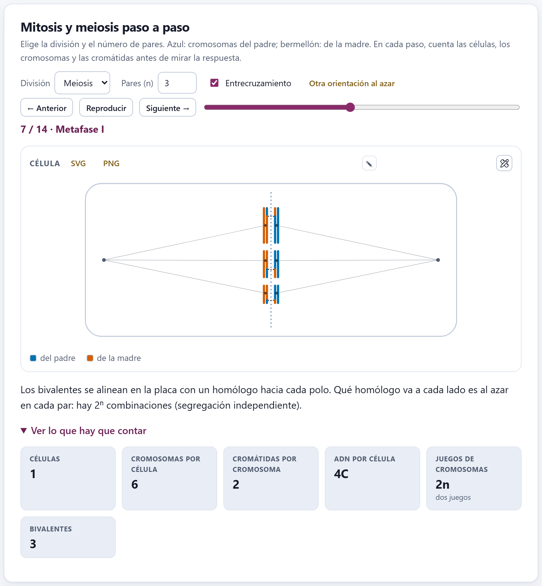
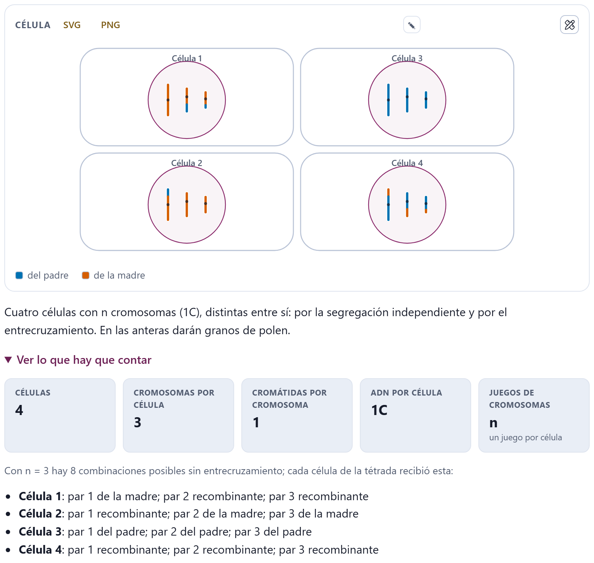
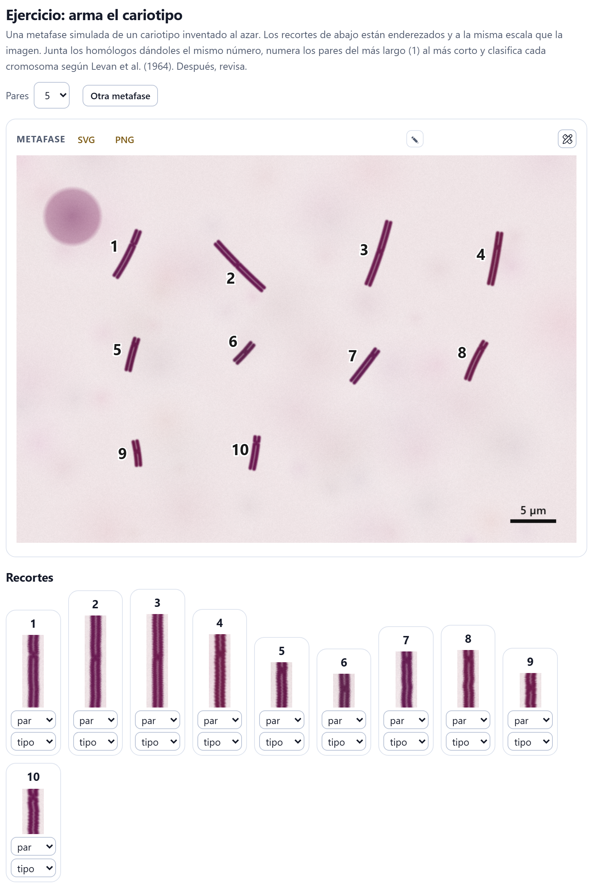
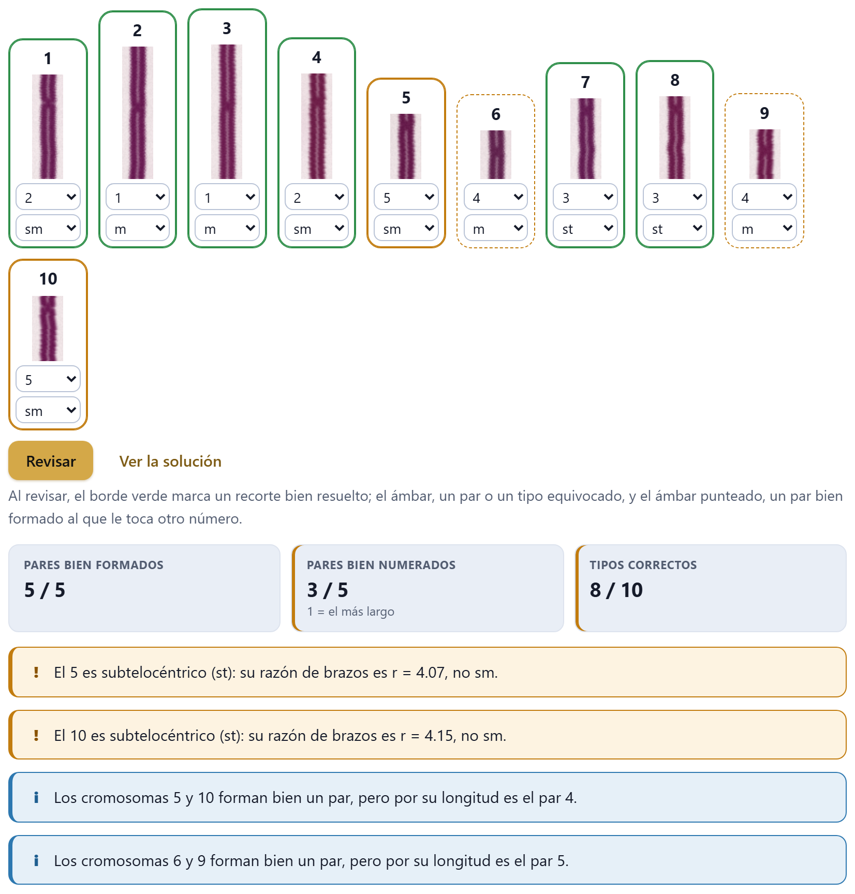
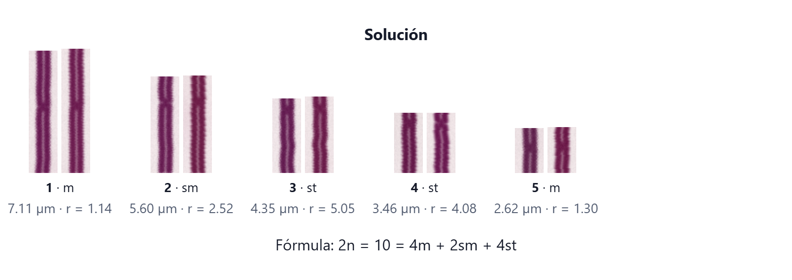
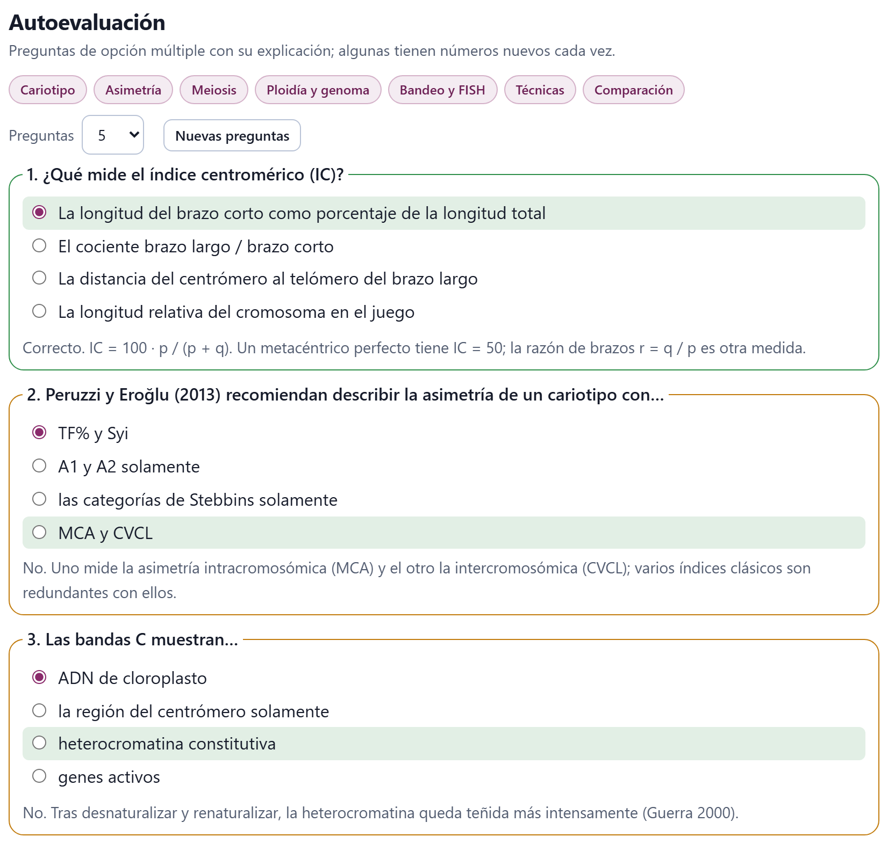
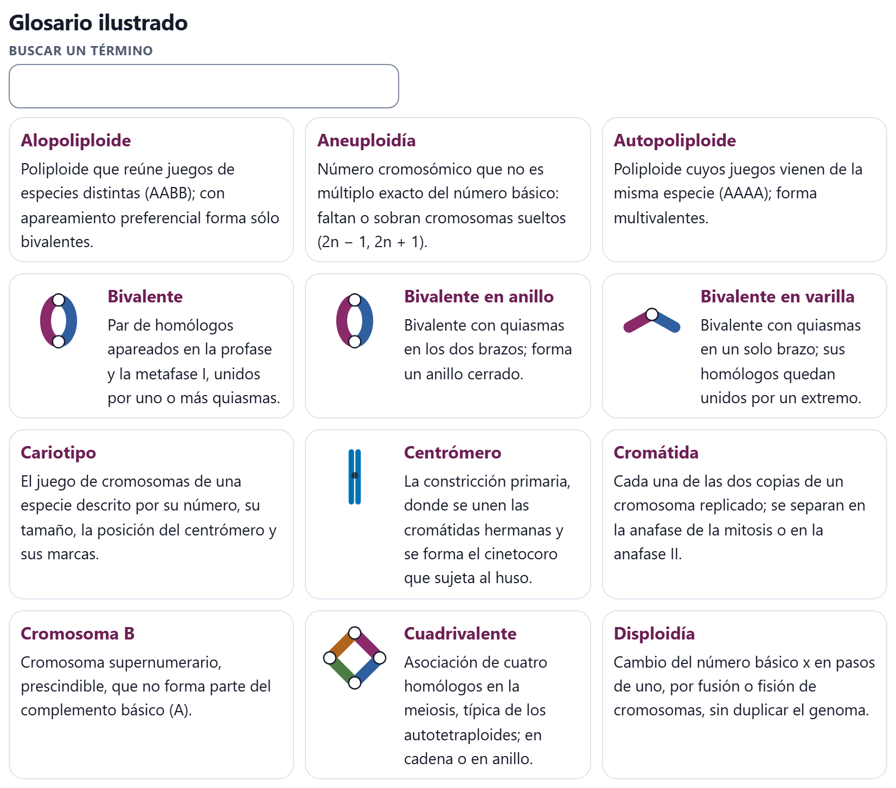
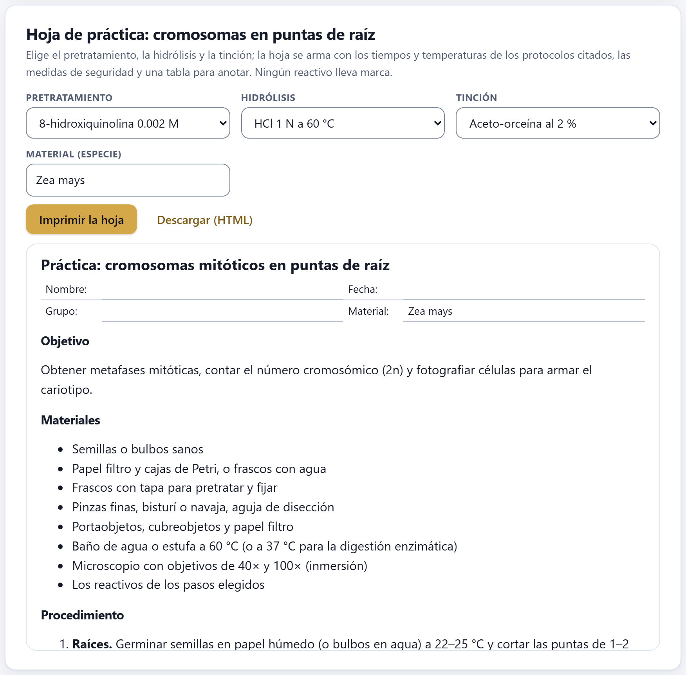

El bloque para el aula y para quien empieza: un simulador de la mitosis y la meiosis que pide contar antes de dar la respuesta, un ejercicio de cariotipo sobre una metafase inventada que se califica solo, una autoevaluación con explicaciones, un glosario ilustrado y una hoja de práctica lista para imprimir. No necesita datos ni toca el proyecto: funciona igual con un ejemplo abierto que sin nada.
El Bloque 9 tiene cinco tarjetas, que se recorren de arriba abajo o desde la lista En este bloque de la derecha. Nada de lo que hagas aquí cambia el proyecto: puedes abrirlo a mitad de un análisis, practicar y volver al bloque donde estabas sin perder nada. Las figuras del simulador y del ejercicio se descargan en SVG o PNG y se editan con el estudio y el editor ✎, como las de cualquier otro bloque (sección 10.3).
Un dibujo de la célula que avanza fase por fase, con un texto que explica qué pasa y una respuesta escondida que dice qué hay que contar.
Arriba se elige la División —Mitosis o Meiosis— y el número de Pares (n), de 1 a 6 (3 al abrir). Cada par tiene su propia longitud y su centrómero en otro lugar, para que se distingan, y vienen en dos colores: azul los del padre y bermellón los de la madre. En la meiosis aparecen dos controles más: la casilla Entrecruzamiento, encendida al abrir, y el botón Otra orientación al azar, que vuelve a sortear hacia qué polo mira cada bivalente en la metafase I y cada cromosoma en la metafase II.

1 2 3 4 5 6 7← Anterior y Siguiente → mueven un paso; Reproducir avanza solo, un paso cada 1.8 segundos, y se vuelve Pausa mientras corre; se detiene al llegar al último paso o al tocar ← Anterior, Siguiente →, el deslizador o la División. El deslizador lleva directo a un paso, y el renglón de debajo dice dónde estás: «7 / 14 · Metafase I». Bajo el dibujo, un párrafo explica la fase.
La mitosis tiene siete: Interfase (G2), Profase, Prometafase, Metafase, Anafase, Telofase y Citocinesis. La meiosis, catorce: Interfase (G2); la profase I en sus cinco etapas —leptoteno, cigoteno, paquiteno, diploteno y diacinesis—; Metafase I, Anafase I y Telofase I; Profase II, Metafase II, Anafase II y Telofase II, y la Tétrada. La interfase se dibuja en G2, con el ADN ya replicado, para que desde el principio cada cromosoma tenga dos cromátidas.
La tarjeta pide contar antes de mirar. Al abrir Ver lo que hay que contar aparecen los recuadros Células, Cromosomas por célula, Cromátidas por cromosoma, ADN por célula (en valores C) y Juegos de cromosomas (2n o n), y, del paquiteno a la metafase I, Bivalentes. En las anafases el recuadro de los cromosomas añade cuántos van a cada polo. Las cifras son las de los libros de texto para el número de pares elegido, no un conteo del dibujo.
| Paso | Células | Cromosomas por célula | Cromátidas | ADN | Juegos |
|---|---|---|---|---|---|
| Interfase (G2) a metafase | 1 | 2n | 2 | 4C | 2n |
| Anafase y telofase (mitosis) | 1 | 4n (2n a cada polo) | 1 | 4C | 2n |
| Citocinesis | 2 | 2n | 1 | 2C | 2n |
| Profase I a metafase I | 1 | 2n (n bivalentes) | 2 | 4C | 2n |
| Anafase I | 1 | 2n (n a cada polo) | 2 | 4C | 2n |
| Telofase I a metafase II | 2 | n | 2 | 2C | n |
| Anafase II | 2 | 2n (n a cada polo) | 1 | 2C | n |
| Telofase II y tétrada | 4 | n | 1 | 1C | n |
En la anafase I se separan los homólogos, no las cromátidas: cada polo recibe n cromosomas, todavía con dos cromátidas, y ahí se reduce el número a la mitad. Qué homólogo va a cada polo se decide al azar en cada par (segregación independiente), lo que da 2n combinaciones posibles; el entrecruzamiento del paquiteno, visible como quiasma en el diploteno, mezcla además los segmentos de las cromátidas no hermanas. La anafase II separa por fin las cromátidas, como una mitosis.
El simulador sigue un modelo propio y esquemático: con Entrecruzamiento encendido hay un quiasma por bivalente, en el brazo largo tres de cada cuatro veces, entre la segunda cromátida de un homólogo y la primera del otro, y las cromátidas recombinantes conservan los dos colores hasta el final. Al apagar la casilla, los cromosomas pasan enteros, de un solo color.

En la Tétrada, la respuesta añade una lista con lo que recibió cada una de las cuatro células: para cada par, si el cromosoma vino del padre, de la madre o es recombinante. Es la forma más directa de mostrar en clase que los cuatro productos de una meiosis son distintos entre sí y distintos de la planta madre.
Una metafase simulada de un cariotipo inventado, con los cromosomas numerados, para emparejar, ordenar y clasificar a mano antes de pedir la calificación.
El ejercicio dibuja la metafase con el mismo motor que hace las imágenes de los ejemplos: cromosomas teñidos con su centrómero, un núcleo en reposo en una esquina y una barra de 5 µm. Cada cromosoma lleva un número junto a él, y debajo, en Recortes, aparecen los mismos cromosomas enderezados a lo largo de su eje y a la misma escala que la imagen, cada uno con dos menús: par y tipo (m, sm, st o t). El menú Pares elige cuántos pares tiene el cariotipo —4, 5 (al abrir) o 6— y Otra metafase inventa uno nuevo.

La tarea tiene tres partes: juntar los homólogos dándoles el mismo número de par; numerar los pares del más largo (1) al más corto, y clasificar cada cromosoma según Levan et al. (1964) por su razón de brazos r = q / p (capítulo 3: m hasta 1.7, sm hasta 3.0, st hasta 7.0, t por encima). Cuando termines, Revisar.
Al abrir el bloque, la app dibuja siempre la misma metafase (la de la semilla 20261007), para que un grupo entero pueda trabajar sobre la misma imagen y comparar respuestas. Otra metafase y el cambio del número de pares sortean una nueva cada vez. Las cifras de esta sección son las de la metafase de inicio.
Revisar pone tres recuadros y una lista de observaciones, y marca cada recorte: con borde verde si el cromosoma quedó en su par, con el número de par correcto y con el tipo correcto; con borde ámbar si el tipo está mal o si el cromosoma no quedó con su homólogo, y con borde ámbar punteado si el par y el tipo están bien pero al par le toca otro número. Una línea bajo los botones lo recuerda: «Al revisar, el borde verde marca un recorte bien resuelto; el ámbar, un par o un tipo equivocado, y el ámbar punteado, un par bien formado al que le toca otro número.»

Las observaciones dicen por qué. Un tipo equivocado da un aviso con la razón de brazos verdadera: «El 5 es subtelocéntrico (st): su razón de brazos es r = 4.07, no sm.» Dos homólogos separados dan «Los cromosomas … son homólogos (el par …, de … µm).»; un par bien formado con el número equivocado, «Los cromosomas 5 y 10 forman bien un par, pero por su longitud es el par 4.» Con todo correcto, la app escribe «¡Cariotipo correcto! Puedes ver la solución con las medidas.».
Ver la solución ordena los recortes por pares y escribe, bajo cada uno, su número, su tipo, su longitud media y su razón de brazos, y al final la fórmula cariotípica.

El cariotipo se inventa con razones de brazos lejos de los límites de Levan (m entre 1.10 y 1.45, sm entre 2.0 y 2.6, st entre 3.8 y 5.5), y cada par mide entre 20 y 25 % menos que el anterior; el par 1 siempre es metacéntrico. Los dos homólogos difieren entre sí, como mucho, un 2 % en cada brazo, como en una buena preparación. Así ningún cromosoma queda en la frontera entre dos clases ni dos pares se confunden por longitud: lo que se evalúa es saber medir con los ojos, no la suerte. En una preparación real los límites sí se tocan, y para eso están los Bloques 2 y 3.
Preguntas de opción múltiple, con cuatro opciones cada una y una explicación que aparece al calificar.
Los botones de arriba son los temas: Cariotipo, Asimetría, Meiosis, Ploidía y genoma, Bandeo y FISH, Técnicas y Comparación; al abrir están todos encendidos, y un clic apaga o enciende uno. El menú Preguntas elige cuántas salen —5, 10 (al abrir) o 15— y Nuevas preguntas saca otra tanda. Cada cambio de tema o de número también arma una tanda nueva.
El banco tiene 33 preguntas: 28 fijas —4 de cariotipo, 3 de asimetría, 6 de meiosis, 6 de ploidía y genoma, 4 de bandeo y FISH, 3 de técnicas y 2 de comparación— y 5 que se generan con números nuevos cada vez: el índice centromérico de un cromosoma con brazos dados, la clase de Levan de una razón de brazos, el 2C de una muestra a partir de los canales del citómetro y de un estándar, el nivel de ploidía de un 2n con un número básico dado, y las combinaciones de cromosomas paternos y maternos que puede recibir un gameto. Las opciones se barajan en cada tanda.

Calificar marca cada pregunta, resalta la opción correcta y añade su explicación, que empieza con «Correcto.», «No.» o «Sin respuesta.». El recuadro Aciertos da el total y el porcentaje, y se pinta de advertencia por debajo del 70 %. Puedes cambiar respuestas y calificar de nuevo; las preguntas no cambian hasta que pidas otras.
Treinta y cinco términos de la citogenética, de Alopoliploide a Valor C, en orden alfabético, cada uno con su definición y, los que se prestan, con un dibujo hecho por la app: los cuatro tipos de cromosoma con su centrómero en su lugar, el satélite, el quiasma y las configuraciones meióticas (bivalente en anillo y en varilla, trivalente, cuadrivalente, univalente). Buscar un término filtra mientras escribes; busca en el término y en la definición, en español y en inglés, y no distingue acentos ni mayúsculas.

El glosario de la app es el de la interfaz; el apéndice C de este manual reúne, además, los términos que usan los demás capítulos.
Una hoja de laboratorio para obtener metafases mitóticas por aplastado de meristemos de raíz, armada con los tiempos y temperaturas de protocolos publicados y lista para imprimir.
Se eligen tres pasos del protocolo y el material; la vista previa de abajo cambia al instante:
| Menú | Opción y condiciones | Fuente |
|---|---|---|
| Pretratamiento | 8-hidroxiquinolina 0.002 M, 3–4 h a 16–18 °C | Sharma y Sharma 1980 |
| Colchicina 0.05–0.1 %, 2–4 h a temperatura ambiente (tóxica: guantes) | Sharma y Sharma 1980 | |
| Agua con hielo (0–4 °C), 18–24 h | Darlington y La Cour 1976 | |
| Solución saturada de α-bromonaftaleno, 2–4 h (en campana) | Guerra y Souza 2002 | |
| Hidrólisis | HCl 1 N a 60 °C, 8–12 min (con orceína o carmín) | Sharma y Sharma 1980 |
| HCl 5 N a temperatura ambiente, 20–60 min (para Feulgen) | Guerra y Souza 2002 | |
| Mezcla de celulasa y pectinasa (2 % y 20 %) a 37 °C, 1–2 h (para bandeo o FISH) | Schwarzacher y Heslop-Harrison 2000 | |
| Tinción | Aceto-orceína al 2 %, 10–30 min | Darlington y La Cour 1976 |
| Acetocarmín o carmín propiónico al 1 %, 10–30 min | Sharma y Sharma 1980 | |
| Reactivo de Schiff (Feulgen), 1–2 h en oscuridad; después, una gota de ácido acético al 45 % | Guerra y Souza 2002 |
En el campo Material (especie) se escribe la especie, que aparece en el encabezado de la hoja. Los menús muestran sólo el nombre del reactivo; las condiciones completas van en la hoja.

La hoja trae, en este orden: el encabezado (Nombre, Fecha, Grupo, Material); el objetivo; los materiales; el procedimiento en ocho pasos —raíces, pretratamiento, fijación en Carnoy 3:1, lavado, hidrólisis, tinción, aplastado y observación—, cada uno con su fuente entre paréntesis; las medidas de seguridad (los ácidos son corrosivos; la colchicina y el α-bromonaftaleno, tóxicos; el reactivo de Schiff y los fijadores se guardan cerrados y rotulados); una tabla de registro de ocho renglones (preparación, célula, fase, 2n contado, observaciones); dos recuadros para dibujar una metafase y una anafase; cuatro preguntas, y las referencias de los pasos elegidos. Con las opciones de inicio son cuatro: Darlington y La Cour (1976), Guerra y Souza (2002), Sharma y Sharma (1980) y Singh (2017). Ningún reactivo lleva marca comercial.
Imprimir la hoja abre el diálogo de impresión con la hoja sola, sin la interfaz de la app (desde ahí también se guarda como PDF). Descargar (HTML) la guarda como practica_citogenetica.html, una página que se abre sin conexión y se puede editar antes de repartirla.
Los tiempos y temperaturas son los de los protocolos citados y funcionan con muchas especies, pero cada material tiene su punto: el pretratamiento y la hidrólisis suelen ajustarse con unas preparaciones de prueba. Las medidas de seguridad de la hoja son las mínimas; las del laboratorio donde trabajes, sobre todo en el manejo y desecho de la colchicina y el α-bromonaftaleno, mandan sobre ellas.
| Si introduces la división celular… | usa el simulador con 2 o 3 pares y pide contar antes de abrir Ver lo que hay que contar. |
| Si explicas la variación de los gametos… | llega a la Tétrada con y sin Entrecruzamiento, y repite con Otra orientación al azar. |
| Si todo el grupo debe trabajar la misma metafase… | deja la de inicio, que es la misma en todas las computadoras; para tareas individuales, Otra metafase. |
| Si preparas un examen breve… | elige los temas de la unidad y 5 o 10 preguntas; las generadas cambian de números en cada tanda. |
| Si la práctica sigue en el laboratorio… | imprime la hoja con los reactivos que tengas y, con las fotos, mide en el Bloque 2. |
Son guías para planear, no recetas: el ritmo y el nivel del grupo mandan.
No aparecen los controles del entrecruzamiento. Sólo existen en la meiosis: cambia la División. La autoevaluación dice «Elige al menos un tema.». Apagaste todos los temas; enciende alguno. El glosario dice «Ningún término coincide.». Borra o acorta la búsqueda. «Imprimir la hoja» no abre el diálogo. Si el navegador no deja imprimir desde la página, la app abre la hoja en una pestaña nueva para imprimirla desde ahí; si tampoco, usa Descargar (HTML). Perdí mis respuestas del ejercicio. Otra metafase y el menú Pares inventan un cariotipo nuevo y borran las respuestas.